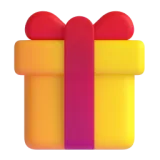
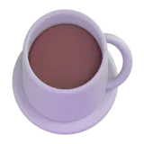
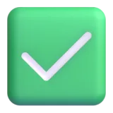

Немецкий по 15 минут в день: начни здесь
Открываешь платформу и знаешь, что делать сегодня. Грамматика, слова, упражнения и экзамены в одном месте, по порядку от A0 до C1.
- 3шага до первого урока
- 7дней с фразой на каждый
- 15минут в день

 340+ гайдов A0–C1
340+ гайдов A0–C1 7500+ слов с аудио
7500+ слов с аудио офлайн в Notion
офлайн в Notion Goethe · telc · ÖSD
Goethe · telc · ÖSD- доступ навсегда

обновления бесплатно
3 шага до первого урока
Отмечай по одному. Последний шаг — открыть платформу.
0 из 3 шагов отмечено

1Выбери уровень
С нуля — платформа A0–A2, она начинается с алфавита. Уже на B1 — B1–C1. Обе вместе — 30 € вместо 40 €.

2Поставь 15 минут в день
Одно и то же время: после кофе или в U-Bahn. Notion работает офлайн на телефоне.

3Открой платформу
Первая тема уже на месте: алфавит и правила чтения на A0 или следующая тема по прогрессу.
Открыть Stellas
Три шага за тобой. Первый урок уже ждёт в Notion.
Как не бросить через неделю

01Нижняя планка
Даже в плохой день открой одну карточку слов. Цепочка важнее объёма.
- 02
Одно место
Грамматика, слова и материалы в одной платформе: не нужно искать, что учить сегодня.
- 03
Повторение
Слова возвращаются по интервальным повторениям, пока не запомнятся.

Начинал пять раз с алфавита?
Каждый новый сайт снова с нуля, и никто не скажет, где ты сейчас. В Stellas прогресс по темам виден: открываешь и продолжаешь с того места, где остановился.
Темы по порядку от A0 до C1. Прогресс по темам виден в Notion.
Подготовка к экзамену внутри
Если цель — сертификат, экзамен встроен в путь: от A1 до C1. В платформе есть отдельный блок по экзаменам: формат, типичные ошибки, шаблоны писем и устной части.
- 120гайдов Goethe
- 89гайдов telc и DTZ
 60гайдов ÖSD
60гайдов ÖSD 40пробных тестов с разбором
40пробных тестов с разбором
- Lesen
- Hören
- Schreiben
- Sprechen
«Мои ошибки» собирает вопросы, где ты ошибся. Повторяешь их перед экзаменом.
Что пишут ученики


Цена: один раз и навсегда
Один платёж, доступ навсегда, обновления бесплатно.
A0–A2
20 €Основа: от алфавита до уверенного A2.

B1–C1
20 €Для тех, кто уже на B1 и идёт к C1.
Бонус к A0–C1: раздел A0–A2 на украинском
- 340+ гайдов A0–C1
- 7500+ слов с аудио
- фильмы, книги, подкасты по уровням
- трекер и повторения в Notion
- обновления бесплатно
Частые вопросы
Сколько времени нужно в день?
15 минут хватит, чтобы двигаться: одна тема или повторение слов. Больше — быстрее, но регулярность важнее.
Подойдёт, если я совсем с нуля?
Да. Платформа A0–A2 начинается с алфавита и правил чтения.
Это подписка?
Нет. Один платёж, доступ навсегда, обновления бесплатно.
Где это работает?
В Notion: на телефоне и ноутбуке, в том числе офлайн в приложении Notion.
Как получить доступ?
Купить на странице оплаты по кнопке «Купить». Вопросы можно задать в Telegram @stellasdeutsch.